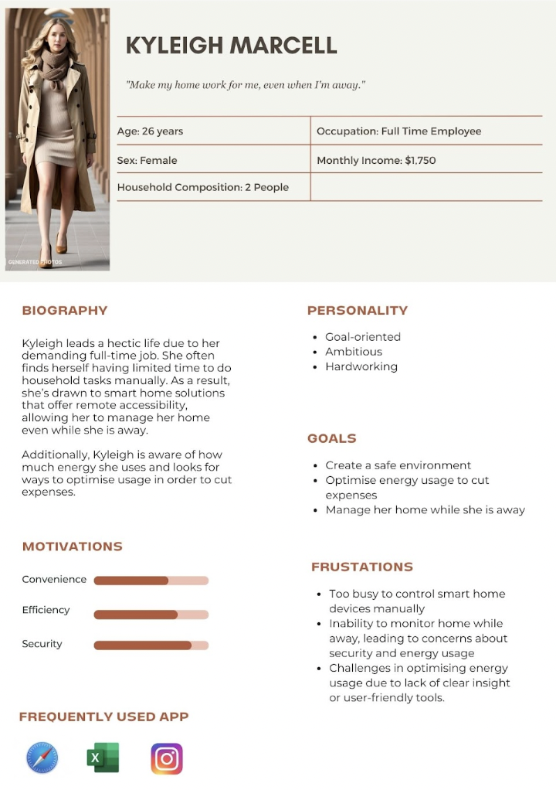
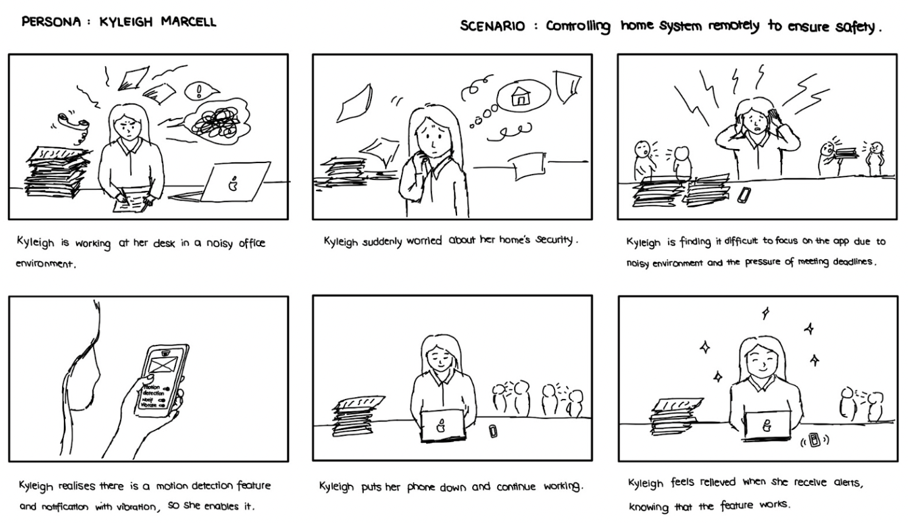
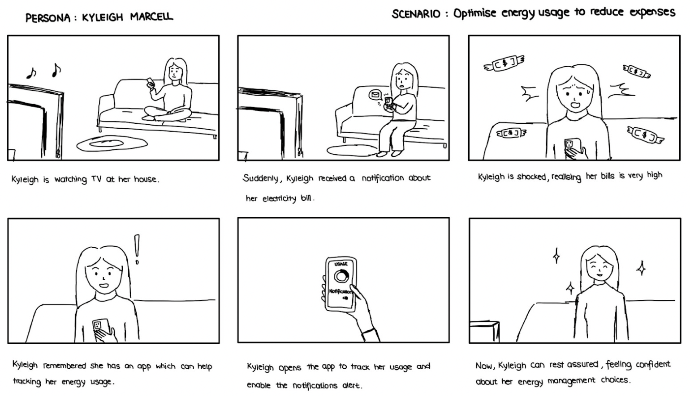
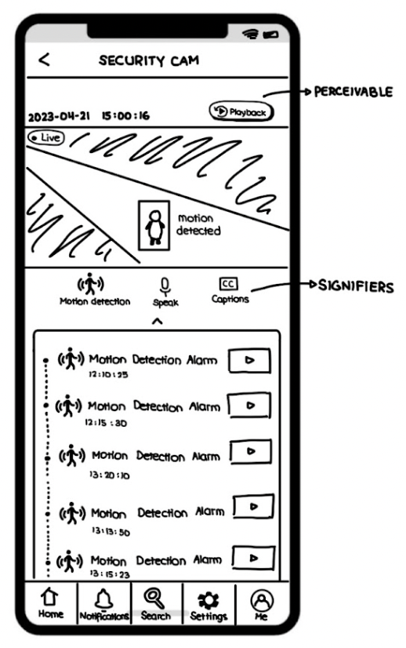
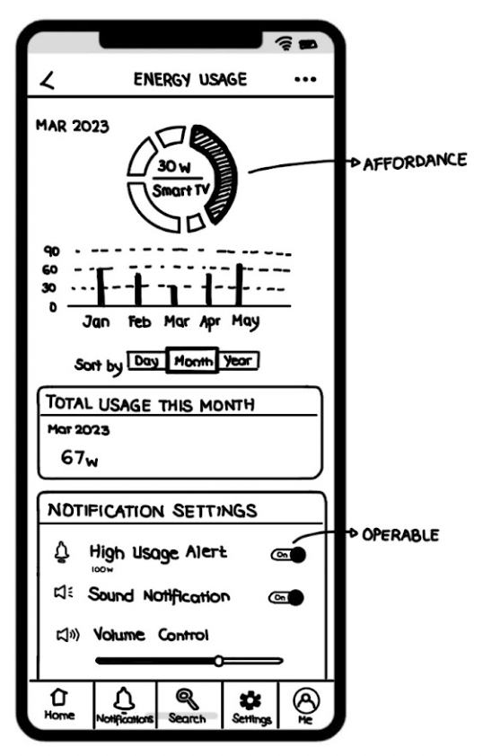
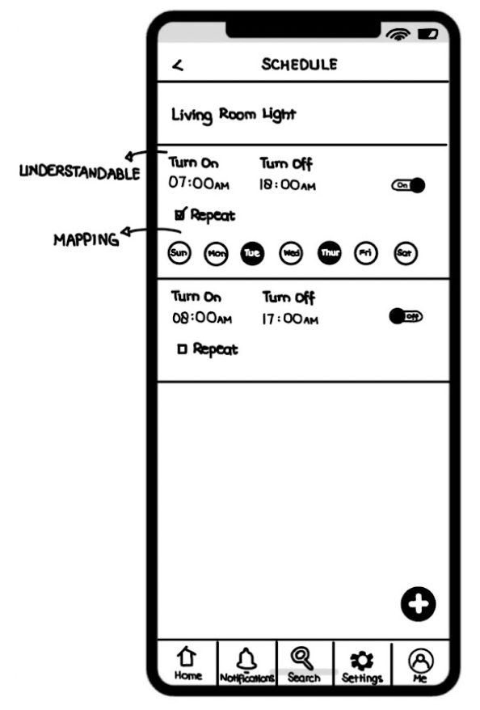
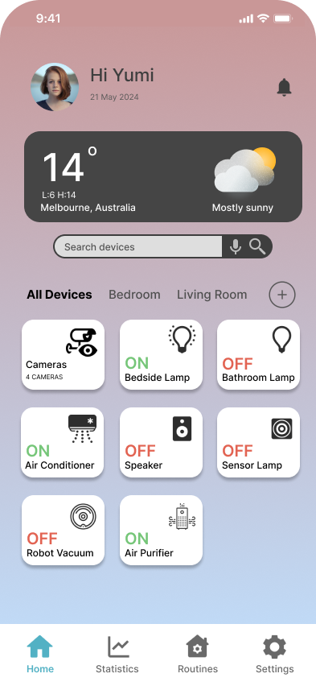
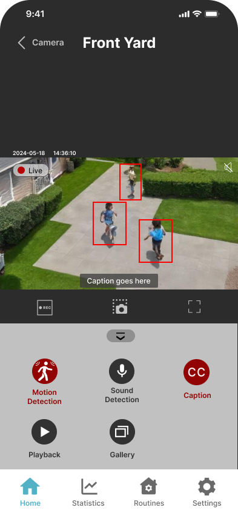
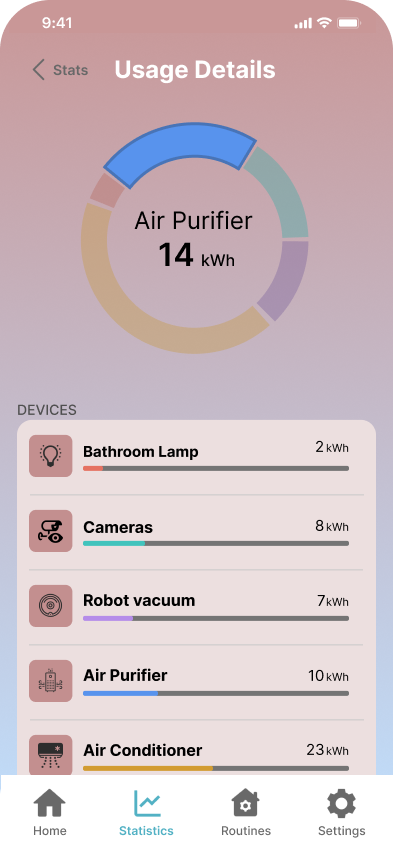
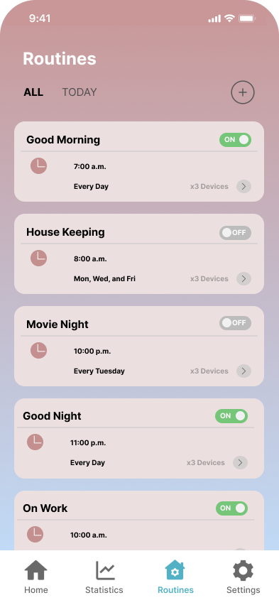

What was this project?
A university group project focused on designing a smart home mobile app with usability and accessibility at the core. Rather than jumping straight into screens, we started with real user scenarios and worked our way through storyboards, personas, user stories, low-fidelity prototypes, and finally a high-fidelity Figma prototype.
Designing for Kyleigh.
Our persona was Kyleigh, a homeowner with an auditory impairment who uses a smart home app to stay in control of her house. Two scenarios drove the design: keeping her home safe when she's away, and reducing her energy bills through smarter device scheduling.
The impairment context was important. It pushed us to think beyond standard UI patterns and consider alternative cues, visual feedback, and captioning for features that would typically rely on sound.

Persona: Kyleigh
Starting with scenarios, not screens.
Before touching Figma, we mapped out two real-life scenarios as storyboards. This grounded the design in actual user behaviour rather than assumptions about what features to include.
Scenario 1: Kyleigh is away from home and needs to check her security cameras and motion alerts remotely. Scenario 2: Kyleigh wants to reduce her electricity bill by scheduling devices and tracking energy usage.

Scenario 1: Remote security monitoring

Scenario 2: Energy usage optimisation
From scenario to prototype
Designing with principles, not just intuition.
Each wireframe was designed with a specific Norman's principle applied. The security camera screen used Signifiers: icons and visual cues indicating each control's function. The energy dashboard applied Affordance through an interactive pie chart that signals interactability. The scheduling screen used Mapping to let users intuitively assign days and times to devices.
Accessibility guidelines were layered on top. Perceivable design in the camera screen, Operable elements in the energy dashboard, and Understandable layout in the scheduling screen.

Signifiers: live camera feed

Affordance: energy usage chart

Mapping: device scheduling
High-fidelity screens in Figma.
The low-fi wireframes were brought to life in Figma as a fully interactive prototype. The final screens kept all the principle-driven design decisions intact while adding a clean, modern visual layer that felt appropriate for a smart home context.



